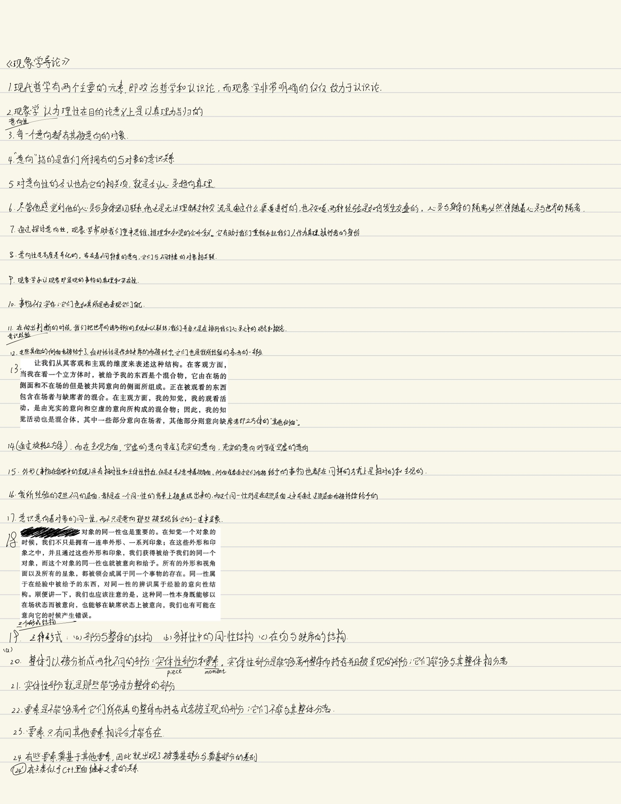
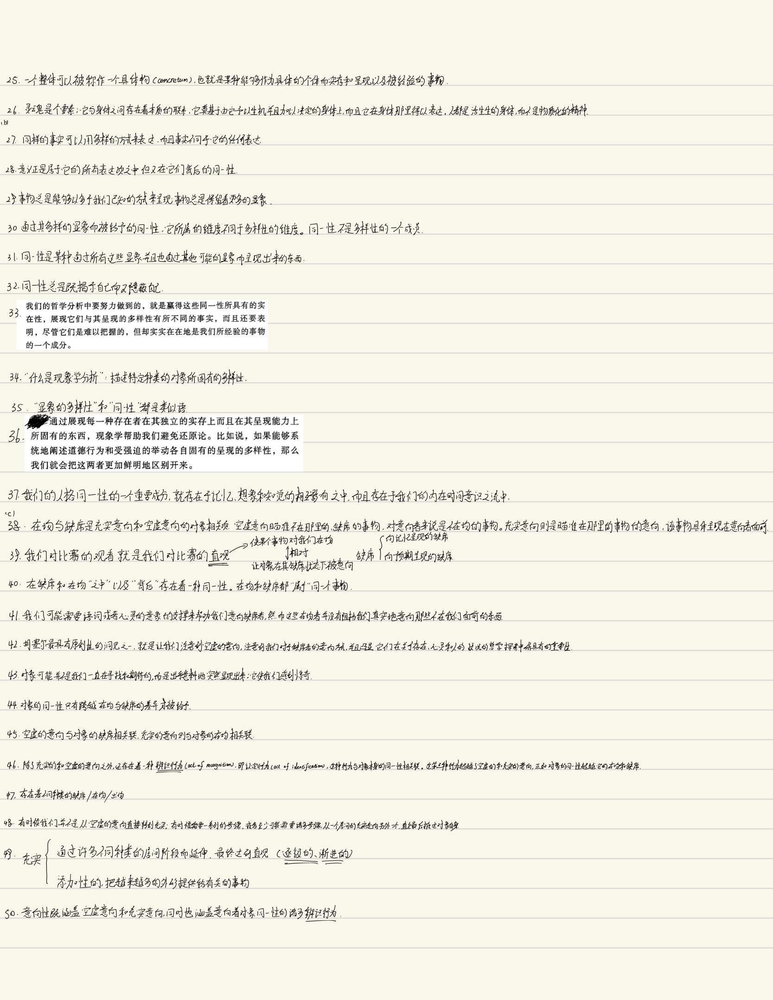
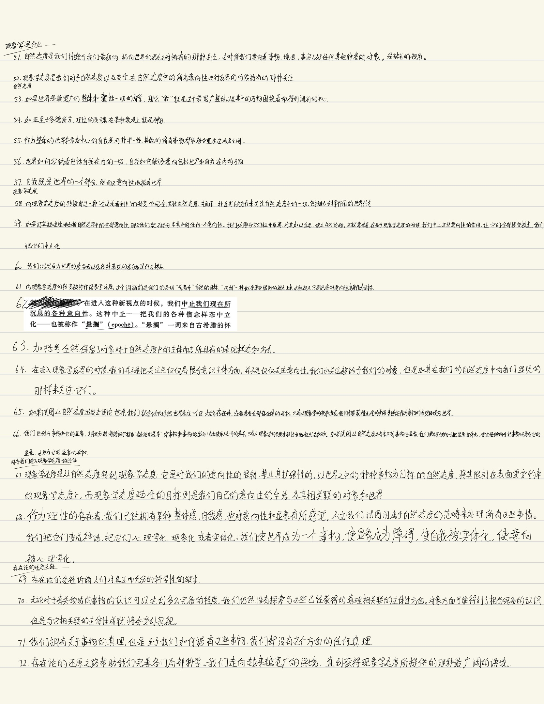
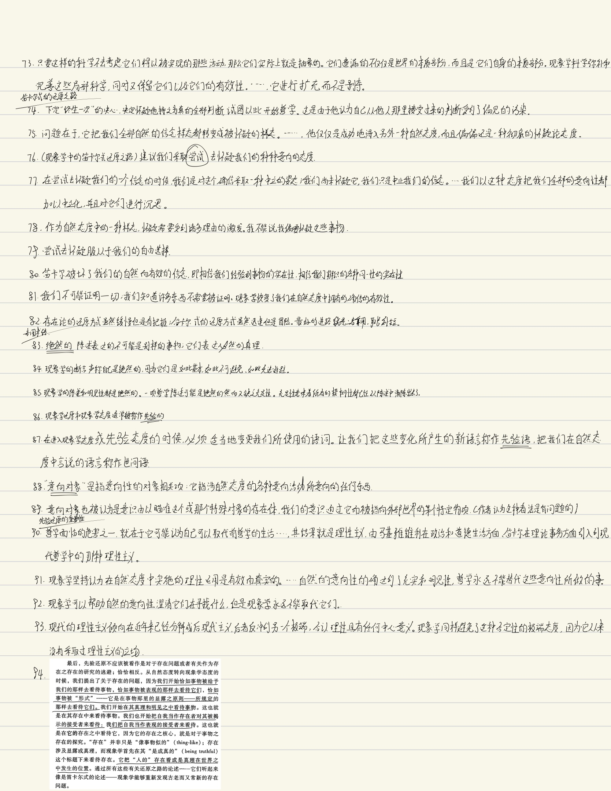

《现象学导论》读书笔记
采用手写的方式记录。
2024-10-30：似乎时间有点不够用，后面的章节由电脑打字记入。





# 第五章 知觉、记忆和想象
甚至在我想象的时候，一切意向性所固有的同一性综合仍然生效。想象的对象经过对它的很多想象而保持同一
我们想象的事物对我们能够就其做出的幻想是有所限制的
想象也是在一种信念样态中运作，但是这种信念样态不同于知觉和记忆的信念样态；它是非现实的，仅仅是 “好像”。
（预期形式的想象）我们不是在复活以前的经验，而是在预期未来的经验。
我们以不同的方式把自己投射到将来完成式
要能有效的实行这种透视，还是得需要相当大的自我力量才行
# 自我的移置
在自我的移置中，此时此地的我能够想象、回忆或者预期我自己处在别的某时某地的鲸鱼，因此，这种移置的形式结构是我们可以生活在未来和过去，生活在自由想象的无人之境。意识的这些被移置的形式都是基于知觉而派生的，知觉给它们提供类原材料和内容。
因为在看到新事物并且把某种倾向性加诸其上的时候，我们以前看到的东西又重新苏醒过来。移置使得这样的情况能够发生
自然态度在这些事务上显得十分笨拙，它总是指望某种事物般的替身，让这个替身在作为接收者的我们和在场与缺席的事物之间充当中介
# 第六章 语词、图像和象征
知觉使我们接触到世界中的事物，知觉的变化形式则可能发生在诠释方面，即我们如何直接的诠释世界呈现给我们的对象
# 语词的在场
一种新的意向开始活动，它使这些被知觉到的标记变成语词。这种新的意向被称作符号性的意向，因为它把意义赋予标记。它显然是一种空虚意向。它是一种被奠基的意向性，属于某种更大的整体的一个非独立部分，因为它依赖于把变成语词的标记呈现出来的知觉基础。
符号性意向之 “箭” 直接穿过被知觉到的语词而指向晒在的布利特宾馆，而不是指向一个意象。
符号性意向也不同于那种伴随着知觉的空虚意向。渗透在知觉中的空虚意向都是连续而不断变化的。言辞的符号性意向则相反，它是离散的、不连续的。
符号性意向把那些可以放入句法并组成称述的诸多离散的意义确立起来。
现象学的批评者常常说现象学依赖内省，依赖对于主观的心理之物的直观。
知觉性直观充实了许多空虚的符号性意向，又激发起更多的意向。
符号性意向指向缺席的事物，但是这种意向也能够在知觉、在直观之中得到充实。
符号性意向引入三个元素：指称、语词和意义或含义
# 图像
符号性意向向外指向事物，而图像性意向则把事物拉到近前。
图像行为更加具体，而符号行为更加抽象
图像的在场具有两可性
# 指号、象征或信号
语句通常为我们联结对象；它们给对象命名，然后就该对象有所言说。指示性符号和语词之间的一个重要差别在于，前者没有进入语法，而后者本质上是句法性的。
# 多样性的丰富，同一性的增强
同一个对象或者事件可以被象征、被图像化，以言辞的方式被意向，也可以被知觉；它也可以被想象、回忆和预期，它历经所有这些变换而依然是同一个事物。我们不是看到我们把很多不同的显像与同一个事物联系起来，而是同一个事物本身就在各种新的方式上被给予。在这种呈现之流之中，同一个事物被一次又一次地辨识出来。它自己地同一性得到增进和强化。
# 第七章 范畴意向和范畴对象
范畴的意向性：这是对事态和命题进行联结的意向，是我们在进行述谓、联系、汇集以及把逻辑操作引入我们经验到的东西的时候发挥作用的意向
两种意向活动的差异：一种是对于某个对象的简单意向，另一种则是形成有关这个对象的判断。
范畴的 (caregorial) 指的是那种把某个对象加以联结、把句法引入到我们所经验到的东西之中的意向活动。